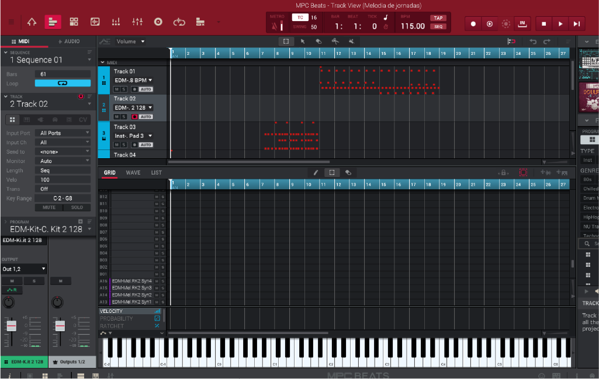

Detalles de servicios
Si deseas conocer más detalles sobre mis servicios, este apartado te ayudará a resolver tus dudas. Te invito a visitar mis redes sociales.
Masterisacion de audio
La música es otra de mis grandes pasiones. Durante mi formación, tuve la oportunidad de conocer el proceso de creación musical, lo que me llevó a interesarme profundamente en la masterización de audio. Me fascina la manera en que este proceso permite resaltar cada instrumento en una canción, logrando que cada sonido se perciba con claridad y armonía.

Master
Me especializo en la creación de composiciones instrumentales, explorando diferentes estilos y técnicas para dar vida a piezas que transmiten emoción y profundidad. Desde arreglos melódicos hasta estructuras rítmicas complejas, mi trabajo busca potenciar la expresión musical en cada composición.
- Acomodo de instrumentos.
- Composiciones instrumentales.
- Tratamiento de audio.
Además, el tratamiento de audio es una parte fundamental de mi enfoque. Me interesa perfeccionar cada sonido, ajustando frecuencias, dinámica y efectos para lograr una producción pulida y profesional. Este proceso es clave para que cada instrumento se perciba con claridad y que la obra final tenga una calidad óptima.
Con estas habilidades, busco aportar creatividad y precisión a cada proyecto musical, logrando composiciones que no solo sean técnicamente sólidas, sino también emocionalmente impactantes.